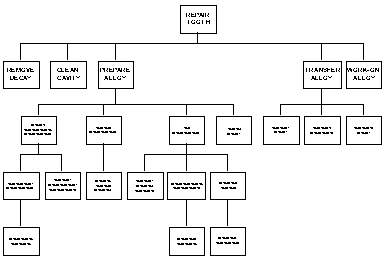
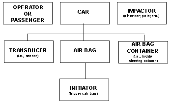
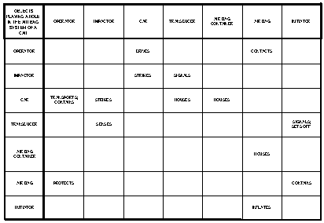
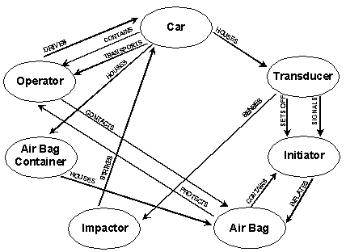
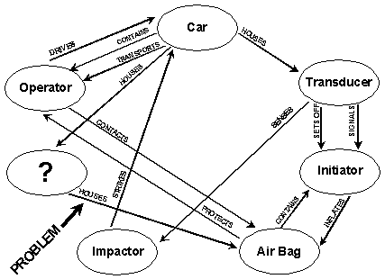
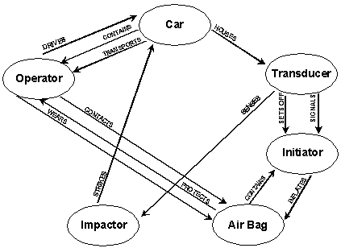
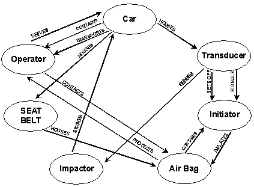

James F. Kowalick, PhD, PE
Renaissance Leadership Institute
Center for TRIZ Development
P.O. Box 659, 9907 Camper Lane
Oregon House, California 95962
(916) 692-1944 ~ Fax: 692-1946
headguru@oro.net
FUNCTIONS AND VALUE All phenomena - all actions - can be expressed as functions. Engineering is really all about satisfying functions. Products and processes exist to satisfy functions required by users. The engineering designer's task is to conceive and build designs that work reliably, at a cost that offers value to customers. The best products and processes offer value to their beneficiaries. Value is the quotient of benefits and cost,
VALUE = BENEFITS / COST.
"Benefits" are measured in terms of the functions that a product or process
design satisfies, so the value equation can be expressed in terms of (1) functions, and
(2) the costs of the parts that make up the design,
VALUE = (SUM OF THE DESIGN'S FUNCTIONS) / (SUM OF THE COSTS OF PARTS).
Cost of the parts is not just the raw materials cost, but includes labor, handling,
transportation, processing, and the cost of doing business whether the parts are bought
from a supplier or produced by the user.
Success in business means increasing the value offered to users and customers. This gives businesses a competitive edge in the marketplace. The value equation above indicates at least two ways that value can be increased: (1) Increase the number and reliability of functions, and (2) decrease the number of parts, or the cost of individual parts. Functional analysis and pruning are used by designers and planners to increase value.
FORM FOLLOWS FUNCTION For a given product or process to work, many functions typically are required. A product or process can be described in terms of its parts, and in terms of its functions. The old saying, "Form follows function," means that every form (i.e., every product or process) is a concrete expression of one or more functions.
FUNCTIONAL STATEMENTS An automobile is a form that satisfies the function "to transport people." A full functional description has three parts: a subject, a verb and an object. For the automobile, this is expressed as
CAR TRANSPORTS PEOPLE (subject) (verb) (object)
SYSTEMS, SUBSYSTEMS AND TREE DIAGRAMS The "CAR" is a system. The "CAR" system includes subsystems like "ENGINE," "TRANSMISSION," "WHEEL ASSEMBLIES," "STEERING SUB-SYSTEM," "BRAKE SUB-SYSTEM," "RADIO & CASSETTE PLAYER," "BUCKET SEATS," "AIR BAG SUB-SYSTEM," and "STORAGE SUBSYSTEM." These and other subsystems in a car can be displayed in the form of a tree diagram called a system parts diagram. Another type of tree diagram is a "functional" tree diagram. Functional tree diagrams can be created for the functions that each system or subsystem carries out. The primary function for a car is "TRANSPORTS." Not all functions in a car are "primary" functions - required for transportation. Some functions such as "ENTERTAINMENT" (as delivered by the RADIO & CASSETTE PLAYER) are secondary functions, or aesthetic functions, etc. System part diagrams and functional tree diagrams are useful because they present a clear picture of a system to the designer.
Every action in a system is a function, so there are many other examples of functional statements. The functional statement for the process of cleaning teeth is
TOOTH-BRUSH CLEANS TEETH (subject) (verb) (object)
Good inventors might argue that the preceding functional statement is not specific enough, and that the following functional statement is closer to the truth:
BRISTLE-ENDS CLEAN TEETH-SURFACE (subject) (verb) (object)
PSYCHOLOGICAL INERTIA This "teeth-cleaning system" example illustrates how important it is, in problem-solving, to use the right words for a functional statement. A designer tasked with "Improving the current method for brushing teeth," might limit his investigative scope to the world of brushes, completely missing methods other than "brushing" (e.g., water-jet cleaning, gargling with mouthwash, ultrasonic probes, etc.). Altschuller, the father of TRIZ, coined a name for the tendency to be imprisoned by one's customary thinking pattern, and by one's all too ready acceptance of words. He called this phenomenon psychological inertia. Psychological inertia is a major barrier to achieving high level creativity. The way a problem is defined determines the path to a solution, so it is very important to (1) define the problem in a way that does not entrap the problem-solver in psychological inertia, (2) be certain that the real problem is being addressed, and (3) start from the ideal final result.
SOLVING THE REAL PROBLEM: A STORY A professor and his graduate student went on an Arctic expedition. During a trek over the ice, they looked behind them and saw, off in the distance, a polar bear pursuing them at breakneck speed. They started running as fast as they could. Soon the graduate student stopped, unzipped his backpack, and started putting on his jogging shoes. The professor looked back towards him and began shouting, "You idiot! You know there's nothing we can do to escape that bear. He's coming after us with tremendous speed!" The graduate student smiled and replied, "Professor, that's not the real problem. There's only one bear. The real problem is who can run faster - you, or I." This story reflects the real world of problem solving. Often the problem being worked on is not the real problem.
THE IDEAL FINAL RESULT It is quite common for problem-solvers to use intuition to solve problems. More intuitive people often reach some interesting and (more rarely) some well-thought-out solutions. They tend not to have a method or process for the way they approach their solutions, and they are often "hooked" by psychological inertia. As a result, the solutions they come up with are relatively low level solutions. (Levels one and two of the TRIZ hierarchy are solutions that come from one's own knowledge and from one's own technology, respectively. Higher level solutions are more elegant, and come from outside one's own technology and science.)
One step towards excellence in problem solving is to use functions and functional statements. Another important step is to employ the ideal final result as a guidepost, while moving towards the solution. There is usually some obstacle that stands in the way of having an ideal solution. For an effective solution to a problem, however, the designer doesn't always have to go deeply into the physics, chemistry or geometry of the obstacle - the inventive path is not necessarily an investigative path. What is necessary is to define, in advance, the ideal final result. The definition of an ideal final result is not dependent upon (1) whether or not something is possible, or (2) how it (the ideal final result) is to be accomplished. Knowing and defining the ideal final result in advance, is like having two pictures: the first picture is the "WAS" picture, and the second picture is the "BECAME" picture. The "became" picture is the ideal final result! Formulating the ideal final result gets the problem-solver to think about solutions to the problem that are independent of technology, and that create the desired result using no resources, no energy, no space, require no maintenance, etc.
Contrary to the way most persons solve problems, the TRIZ/ARIZ approach focuses on solving the problem "backwards," beginning with the definition of the ideal final result. This is illustrated by the following problem, taken from the writings of Altschuller, but translated, rewritten and modified for American audiences:
PROBLEM ILLUSTRATING USE OF THE IDEAL FINAL RESULT
The Problem: How can a person carry back exactly 6 quarts of water from a river? The
person has only two buckets. One bucket holds exactly 4 quarts, and the other holds
exactly 9 quarts. Only one trip back is allowed.
PROBLEM DISCUSSION
This is a relatively simple problem that can, in fact, be readily solved using intuition
alone. The solution offered below begins by defining an ideal final result, and working
backwards from it. Very complex technical problems can be solved using this approach. In
many cases, the natural "intuitive" approach would be incapable of solving them.
SOLUTION TO THE PROBLEM
Step 1. Exactly 6 quarts of river water are required. Ideally, this quantity can be
carried back in one bucket. Only one of the buckets - the 9-quart bucket - can hold 6
quarts. So the 6 quarts of river water need to be carried back in the 9-quart bucket. This
is the ideal final result.
Step 2. How can exactly 6 quarts of river water be measured/metered into the 9-quart bucket? First the 9-quart bucket has to be filled, and then 3 quarts of river water have to be poured out of it. That's how.
Step 3. To pour out 3 quarts from the 9-quart bucket containing 9 quarts of river water, there needs to be a 3-quart container to fill. After this 3 quarts of water is poured from the bucket holding 9 quarts, there will be exactly 6 quarts - the required quantity of river water - remaining. This means that a 3-quart container/bucket is needed, but the person doesn't have one. The person only has a 4-quart bucket.
Step 4. There is a physical contradiction here. The remaining bucket holds 4 quarts, and it must hold 3 quarts! There has to be a way to make a 3-quart bucket out of the 4-quart bucket. This is the real problem to be solved. This problem has to be further analysed.
Step 5. If the 4-quart bucket already had 1 quart of river water in it, then it would be a "3-quart" bucket, and the physical contradiction would be satisfied: "The bucket is a 4-quart bucket, and the bucket is a 3-quart bucket." Now the problem becomes: "How to put precisely 1 quart into the 4-quart bucket, making it a 3-quart bucket?" This is explained in the next step.
Step 6. Starting with two empty buckets, fill the 9-quart bucket full, and pour out 4 quarts, twice, into the 4-quart bucket, disposing of the 4 quarts each time. This leaves only 1 quart remaining in the 9-quart bucket. Pour the remaining 1 quart from the 9-quart bucket into the empty 4-quart bucket. Now the (empty) capacity of the 4-quart bucket is 3 quarts. The problem is solved by going back to step 3!
TRIZ AND ARIZ TRIZ is a rapid, creative approach for solving problems - not just ordinary problems, but also "impossible-to-solve" problems. The word "impossible" really means "impossible by previously known means." Given a good inventive technique, the impossible becomes the possible. TRIZ is the Russian acronym that stands for "Theory of the Solution of Inventive Problems" (or in Russian, "Teorija Rezhenija Izobretatel'skich Zadach"). An inventive problem is a problem that contains one or more technical conflicts. The TRIZ approach is included in a rather rigorous step-by-step process, somewhat similar to an algorithm, although not as rigorous as a formal mathematical algorithm. This problem-solving algorithm is called ARIZ (another Russian acronym meaning "Algorithm for the Solution of Inventive Problems").
S-FIELDS AS FUNCTIONS One important law of TRIZ is the idea that "All technical functions are expressed in terms of three elements." The author's experience would express it even more strongly: "The necessary requirement for a function is that it have three elements. If there are fewer than three elements, there is no function."
According to Altschuller, there are two categories of elements making up functions. One is "SUBSTANCES" and the other is "FIELDS." A "substance" could be any material thing (visible or invisible), such as an atom, a molecule, or even an automobile, a wheel, or a telephone pole. A "field" represents a source of energy, and is usually identified by the type of energy employed, such as "mechanical," "chemical," "thermal," "nuclear," "acoustic," etc. New areas for TRIZ are opened up if the definition of a substance is expanded to include information, and the definition of field is expanded to include the operations that manipulate information. Substances are symbolized by "S" and Fields by "F." Another name for a function is an "S-Field" or "Su-Field," both of which are shorthand for "Substance-Field." The use of S-Fields to model functions, and to solve problems, is referred to as "S-Field Analysis."
Not all technical professionals familiar with S-Fields are satisfied with their ability to solve inventive problems. One concern privately expressed by TRIZ experts is that "S-Field analysis is not an entirely satisfactory or complete way to describe functions, problems with functions, and solutions to problems with functions." Nevertheless, S-Field analysis, and its relationship to TRIZ, is a brilliant system that works rather well, in spite of its shortcomings.
S-FIELD EXAMPLE The best way to explain what an S-Field is, is by giving an example. Consider the process of cleaning teeth. Cleaning teeth is a function, so it should be capable of being expressed as an S-Field.
One of the substances in any S-Field is the "object being worked on," also called the "artifact" or "S1." This is the teeth (or teeth surface). Another substance in any S-Field is the "object doing the work," also called the "tool," the "instrument," or "S2." This is the tooth brush (or bristle ends). When teeth cleaning occurs, there is an interaction between the bristle ends and the surf|ace of the teeth. But without some other element, this interaction would never take place - there would simply be a tooth brush and the teeth, without any action occurring between them. What is missing is a means of bringing the toothbrush bristles to the surface of the teeth, and moving the bristles repetitively across and around the surface. Altschuller expresses this "means" in the form of the field. For the process of cleaning teeth, the field would be a "mechanical" field, or simply F-mech. The S-Field is usually drawn as a triangle or partial triangle, shown below for the "cleaning teeth" example:
| F-Mech | ||
| | | ||
| | | ||
| | | ||
| S1---------- | cleans---------- | S2 |
| (Bristles) | (Teeth) |
This is the S-Field for the function called "CLEANING." The lines between S1 and
S2 indicate that there is an interaction between them - in this case, that interaction is
expressed by the verb "cleans." "cleaning" is a useful function. Other
functions, however, may be useless or even harmful. For example, cleaning teeth with a
brush can lead to gum damage, bleeding, etc. In general, designers want to improve useful
functions in some way, and eliminate or reduce harmful or useless functions.
Much more can be said about S-Fields and their use in solving inventive problems, but that is beyond the scope of this presentation. The starting point for the use of S-Fields is to have a symbolic expression of the problem using the language of substances and fields. This symbolic expression - the S-Field - is a technical function.
S-FIELDS, THE THREE ELEMENTS, AND FUNCTIONAL STATEMENTS Notice that the bottom portion of the S-Field triangle is a "functional statement" with three parts: subject, verb and object. The object (the teeth or S1 - the substance being worked on) is the "PASSIVE" element, and the subject (the bristles or S2 - the substance doing the work, or behind the action) is the "ACTIVE" element. The field indicated in the S-Field diagram (F-mechanical) is the "ENABLING" element or enabling force. The field is made possible by the presence of a third substance (the fingers, hand and arm of a human being).
FUNCTIONAL ANALYSIS AND PRACTITIONERS Functional Analysis is used in a major way by some TRIZ practitioners, to set the stage for the use of S-Fields, or to set the stage for further problem-solving activities. It has also been formally incorporated into several problem-solving algorithms. Not all practitioners have verified the usefulness of using functional analysis. Ironically, there is a certain degree of psychological inertia attached to the use of TRIZ itself. It is not easy for some practitioners, schooled in the "classical TRIZ" approach, to accept the results of further TRIZ developments. This is especially true for practitioners schooled in ARIZ, who preach that the use of functional analysis, or the use of computer software to represent functional solutions, is not especially productive. On the other hand, other "TRIZ-niks" have broken through the bonds of TRIZ psychological inertia, and have been applying functional analysis and inventive software in a major way, to solve very complex technical problems. American TRIZ practitioners, because they are unencumbered by years of "classical" TRIZ practice, are not as susceptible to this form of psychological inertia. The chief difficulty with psychological inertia is that "Those who are most unaware of its influence on their creative practices, are those who are influenced the most by it!"
REQUIREMENTS OF AMERICAN DESIGNERS The American and Russian cultures are different in several major ways, including the area of engineering designers' expectations. American designers demand good results fast They want to learn how to apply subjects like TRIZ far more rapidly, and they prefer to be solving real problems while they learn TRIZ (they find "canned" case studies ineffective). RLI's learning approach, called "Experiential Training," has been found highly effective by professionals from hundreds of American corporations over the last ten years. The idea that "It takes five to ten years to become a TRIZ expert" is simply not acceptable to American designers or American corporations, faced as they are with intense global competition, and trying to significantly reduce time-to-market. These requirements represent a real challenge for TRIZ training organizations and TRIZ consultants. The distinction may not be American vs. Russian: it may be a distinction between industrial TRIZ users who want lots of solutions quickly and academic TRIZ practitioners who prefer the elegance of a single solution of great clarity.
Members of the Invention Machine Laboratory have been responsible for making some remarkable developments and for going beyond the classical TRIZ approach. One development is the computerization of TRIZ, in the form of invention software. Another development is in the use of functional analysis to describe both problems and solutions. These two developments have been responsible for significantly increasing the productivity of problem-solving. Further developments have been made in incorporating their work into formal problem-solving algorithms. All these developments were geared towards addressing the needs of American engineering designers, who are persistent and demanding in their quest to solve problems more rapidly, and to create breakthrough designs.
TRIZ DEVELOPMENT AT THE RENAISSANCE LEADERSHIP INSTITUTE The Renaissance
Leadership Institute's (RLI's) Center for TRIZ Development has made major strides in the
further development of TRIZ and ARIZ. These developments include the following:
(1) Making S-Field analysis more complete, and easier to apply to inventive problems;
(2) Americanizing problem-solving algorithms by making them less intractable to learn and
to apply;
(3) Further developing the use of functional analysis and PRUNING for TRIZ applications,
and
(4) Creating an organized technology forecasting approach using TRIZ. These developments
have already been used by RLI's client companies, to introduce breakthrough products to
the marketplace in record times. The remainder of this paper discusses item number three,
the use of functional analysis and PRUNING for TRIZ problem-solving applications.
FUNCTIONAL TREE DIAGRAMS Earlier the process of cleaning teeth was expressed as a function. It is also possible to break down, or decompose, a product or process into its parts, and to express the "parts" as a functional tree diagram. Consider the dental process of repairing dental cavities by the traditional method of using amalgam, an alloy containing mercury, as the filling agent. This "tooth repair" process can be decomposed into the steps shown in the figure below. This functional tree diagram is intentionally incomplete. The team that developed it focused on only one part of the functional tree.

Five process steps - each of them a separate function - are shown in the second "branch" of the diagram. The team was interested in only one of these functions: the "prepare alloy" function. This function in turn decomposes into four more functions, and these in turn may or may not decompose into further functions.
Functions immediately above a selected function can be obtained by asking "Why?" to the lower function. Functions below a selected function can be obtained by asking "How?" to the higher function. In this manner, the entire functional tree diagram (or the desired part of the functional tree diagram) can be generated.
Each function in the hierarchy of the tree diagram decomposes into several functions or steps (with the exception of functions at the very lowest level of the hierarchy). It was demonstrated earlier that three elements are required for a function to exist. This is a general law. It may also be true that when a function decomposes, it decomposes into a fixed number of general steps. That is, there may be a fixed number of steps to each and every process. If this is true, it has not yet been discovered and verified.
Functional tree diagrams are very useful to designers, problem solvers, and TRIZ practitioners. They give a clear picture of the relationships that exist between functions. Note that, to create a full functional tree diagram, there has to be a "form." For example, the top of the functional diagram reads "Repair Tooth." Many ways can be conceived for repairing a tooth, but the diagram generated describes one type of process: the process that begins with removing the decay, then cleaning the cavity, then preparing an amalgam alloy, transferring the alloy to the cavity, and working on (shaping and compacting, etc.) the alloy while it hardens inside the cavity. This process represents one "form" that satisfies the function, "Repair Tooth." For each functional statement, there will be some "form" generated, before the next level of functional hierarchy can be generated. Form follows function.
SYSTEM PARTS DIAGRAMS It was implied earlier that the parts diagram for a car would be rather extensive - there are a large number of parts to a car (the functional diagram connected with the parts diagram would be even more extensive, because a part can serve more than one function). Parts diagrams are useful from an inventive point of view. All problems can ultimately be "boiled down" to an interaction (i.e., function) between two objects, systems, subsystems or parts. The term "object" is used here in the broadest sense. These two objects are the "substances" in S-Fields. In developing a parts diagram to assist problem solving, it is only necessary to include the objects that are pertinent to the problem.
Consider a driver's side, air bag safety system. There may be a desire to improve the system in some way, or there may be a definite goal to fix or eliminate a problem with the system. The figure below is a partial system parts diagram of an automobile air bag system.

The "super system" for the air bag system is a car, which "contains" the system, and for which the system was designed. Other important outside "objects" include the operator and the "impactor." The impactor is what strikes the car, or what the car strikes. It could be another car, a concrete embankment, or a telephone pole. The air bag system consists of the air bag itself, an air bag "container," an initiator, and a transducer. The primary function of this system is to protect the operator. That function is carried by the air bag itself, through its inflation. The air bag container, which is a part of the steering column assembly, has the function of containing the air bag prior to deployment. The initiator provides gas to inflate the air bag when required. The transducer/sensor both senses the impact and signals the initiator to begin inflating the air bag.
The main function of this air bag system - protecting the driver - is "carried" by the air bag itself. From the air bag, this main function is carried by the initiator, which supplies high pressure gas to inflate the air bag. The transducer's function, also, is vital to the operation of the air bag. The air bag container, however, does not carry the main function. Its "secondary" function of containing or holding the air bag is not really required for the main function to work.
The designer's task may require more level of detail in the system parts diagram. The diagram itself is used to support the designer's analysis and understanding of the problem. This understanding is further enhanced by creating, from the system parts diagram, a functional matrix showing the functional relationships between the parts, as depicted in the figure below.

The functional matrix for the air bag system is formed by listing the parts of the system along both the vertical (left) column and horizontal (top) row, and then considering the functions between any two parts. The parts listed in the left hand column are considered to be the "subjects" of the functional statement, with the parts listed along the top being the "objects" of the functional statement. All functions, including harmful and useless functions, are to be included in this matrix. For example, if the initiators are found to overinflate air bags infrequently (i.e., in some cars), the verb "overinflates" would appear in the matrix cell located in the bottom row (right of the word "initiator"), and in the fifth column, under the words "air bag." This matrix contains 16 functions.
The designer's task may be to improve upon one of the functions shown. Or, it may be to eliminate a harmful or useless function (not shown). Or, it may be to create an entirely new replacement for the current part (object). Or, it may be simply to use the matrix to explore new design possibilities. If the designer's task is to improve upon or modify one of the functions, he can determine which one from the matrix, and can then proceed with TRIZ and ARIZ. In any analysis, however, it can be very beneficial to apply "pruning" techniques to the system (i.e., the air bag system).
PRUNING TECHNICAL SYSTEMS TO CREATE NEW DESIGN DIRECTIONS In agriculture, pruning a tree is the removal of branches and twigs to promote the health of the tree and to maximize the crop by providing the best environment for the fruit. By analogy, pruning in TRIZ is a process of simplifyiing a design by removing parts.
Pruning begins by considering (1) the functions of the parts (objects) of the technical system, and (2) the costs of the parts (objects) of the technical system. The overall purpose is to create more value for users. This is accomplished by considering deleting (i.e., "pruning") an object from the sytem. The act of pruning eliminates the cost of the object pruned, thereby increasing value offered. But the function that the object delivered must also be considered.
For example, what are the functional ramifications of pruning the air bag itself from the air bag system? Such an action leaves the "function" of the air bag unaddressed. The designer has three possibilities to consider. (1) The function is no longer required. "Drivers don't need the level of protection offered by air bags, so nothing will be done. (2) There is no object of the function. This means "There is no driver to protect." If this were true, there would be no reason for having the function, and certainly the air bag could be pruned. Perhaps the car can be controlled by someone or something other than the operator. These are designs for the designer to consider. "A pilotless automobile" or "A perpetual taxi!" (3). Some other object or part of the system takes over the function of the object being pruned. For example, can another object in the air bag system, or outside of the air bag system, take over the air bag's function, which is to protect the driver?
The pruning procedure is powerful because it forces the designer to consider creative paths leading to breakthrough products - paths that otherwise might not have been considered. Applying this approach to the air bag system, with the goal of "system simplification," means reducing costs and improving air-bag reliability. The functional matrix is useful as a visual "overview" of the air bag system and its various functions. Functional line diagrams (shown below) can also be used to show system functions. Although a functional matrix documents all possible interactions between pertinent objects in a technical system, functional line diagrams are more useful for visualizing objects to be pruned, as well as the ramifications of pruning them.
 The functional line diagram shows all functions related to a system or subsystem. It also indicates the three part of each functional statement (i.e., the active part, or "subject," or S2; the passive part, or "object," or S1; and the action, expressed as a verb). For example, the primary function of a driver-side air bag system is to protect the operator. This is indicated by an arrow-line connecting the air bag with the operator: "Air Bag Protects Operator," where the air bag is the active element, and the operator is the passive element. On the other hand, the operator is the active element in the functional statement, "Operator Drives Car." Whether or not an element of a function is active or passive depends upon the functional statement that describes the function.
To simplify and lower the cost of the air bag system, what object, of the objects shown in the functional line diagram, is a candidate for pruning? One possibility is the "Air Bag Container," which has the function of containing, or "housing" the air bag. This is the upper part of the steering column and steering wheel. If this part of the automobile were "pruned" - relative to its function - this means that the design of the steering column/wheel would be less complicated and easier to manufacture, and would result in a cost reduction. The problem remains, however, "When the Air Bag Container (Steering Wheel and Column) is pruned, how will its function (housing the air bag) be addressed?" This problem is illustrated below.
 As mentioned above, there are three possible answers to this question. The first possibility is that "The function may no longer be required." The function is "Houses" or "Contains." This possibility implies that there is no longer a need to house or contain the air bag. Like the steering wheel or the mirror, it is visually obvious, and the designer simply needs to find the approriate location from which it can function well. One such "location" could be the operator. For example, the operator could "wear" the air bag as a vest or jacket. Before rejecting this possibility, it is a good practice for the designer to consider the advantages and disadvantages of it. The figure shown below depicts the operator as "wearing" the air bag.

Some possible advantages: (1) The rest of the system needs little modification. An electrical wire from the air bag merely needs to be "plugged" into the dash panel of the car. (2) Whereas, with the "old" system, the geometrical relationship between the operator and the air bag surface, at the moment the operator's body contacts the air bag, is relatively unpredictable. The new design, being attached to (worn by) the operator, will have the same contact-relationship with the operator, no matter what the operator's location is just after the impact. This may improve the survivability of the driver. (3) The new system costs considerably less. (4) The new system represents a low-cost "accessory" product, which can be added to cars that do not have air bag systems (without modifying the steering column or steering wheel). (5) The new system can be used by front-seat and back-seat passengers, as well as by drivers. (6) Different sizes of the new system can accommodate people of different sexes, weights and ages (including children).
Some possible disadvantages: (1) Some persons will not want to "wear" an Air Bag Vest. (2) The system could complicate the driver's ability to operate the car. (3) People forget to put on the Air Bag. (4) The air bag has no "place" to reside when the car is parked, making it easy prey for car break-ins. (5) Some persons may not like the idea of the high explosive-containing "initiator" being inside the vest they are wearing.
A second possibility for the designer to consider is that "There is no object of the function." This means that, for the functional statement "Air Bag Container Houses Air Bag," there is no "air bag" to house. This creative prompt challenges the designer to consider ways, without using a traditional air bag, to protect drivers of cars.
A third possibility for the designer to consider is that "Some other object or part of the system takes over the function of the object being pruned." What other part of the air bag system - or part of a related systerm, or of the supersystem ("car") - is available to take over the function of "housing" or "containing" the air bag? In fact, this possibility has already been considered by automotive designers. One candidate design uses the "seat belt" to contain the air bag. Other automobile manufacturers are considering including the air bag in door panels and in other convenient locations - depending upon whether the design is for frontal or side impacts. One design for this third possibility is shown in the figure below, where the seat belt houses the air bag.

Pruning is one of the natural consequences of the evolution of technical systems. In the Invention Machine Laboratory software, it is one of the most important prompts in the Prediction Tree. In the evolution of technical systems, there is a tendency for systems to be merged (to satisfy several functions with one system), and then pruned (for design simplification and cost reduction).
The overall problem solving flow is
State the problem
State the ideal final result
Create the function tree
Analyze each function as a candidate for pruning
Analyze each subsystem or part as a candidate for pruning
Prune as needed
Apply the TRIZ techniques to the remaining problem
Evaluate solutions. Select those that best meet the needs of the customer and the business that produces and delivers them.
The result is that customers and users receive more value, and producers capture more
market share.
~ ~ ~ ~ ~ ~ ~
Bibliography
Altov (Altschuller), Genrikh, And Suddenly the Inventor Appeared, Translated by Lev Shulyak, Distributed by Breakthrough Press (916) 974-7755; Fax: (916) 482-9898.
Altschuller, Genrikh, Algorithm of an Invention, Privately translated by the Renaissance Leadership Institute, Center for TRIZ Development, (916) 692-1944; Fax (916) 692-1946
Altschuller, Genrikh, Creativity as an Exact Science, Privately re-translated by the Renaissance Leadership Institute, Center for TRIZ Development, (916) 692-1944; Fax (916) 692-1946
Blosiu, Julian and Kowalick, James, TRIZ And Business Survival, Part I. The TRIZ-Journal (free), web page address: http://www.triz-journal.com; E-Mail: headguru@oro.net; (916)692-1944; Fax (916) 692-1946
Domb, Ellen and Kowalick, James, Quality Function Deployment and TRIZ, Proceedings 7th Symposium on QFD, QFD Institute, Ann Arbor, MI. 1995.
Fey, Victor, and Riven, Eugene, TRIZ: A New Approach to Innovative Engineering and Problem Solving, Target, September/October 1996 Issue.
Invention Machine Labs Software, The TRIZ-Journal (free), web page address: http://www.triz-journal.com; E-Mail: headguru@oro.net; (916)692-1944; Fax (916) 692-1946
Kowalick, James, Concept Generation Workshop, American Supplier Institute, Allen Park, Michigan, (800) 462-4500.
Kowalick, James, Creating Breakthrough Products: Using TRIZ and Other Leading Edge Tools to Achieve Market Dominance, Notes from the regularly scheduled, two-day Executive Overview seminar at Cal Tech, Industrial Relations Center, Pasadena, California, (818) 395-4043; Fax (818) 795-7174
Kowalick, James, Going Beyond Concurrent Engineering, White Paper on Leading Edge Tools Used in Concurrent Engineering, Distributed by Breakthrough Press (916) 974-7755; Fax (916) 482-9898
Kowalick, James, Organizational Transformation Using Twelve Leading-Edge Design Practices: How Highly Effective Designers Achieve World Class Engineering Systems, Special Paper, 12th Annual Taguchi Symposium, ASI, Rochester, N.Y., Oct 19, 1994, Available through Breakthrough Press (916) 974-7755; Fax (916) 482-9898
Kowalick, James, Rapidly Achieving Next-Generation, Low-Cost, Trouble-Free Products and Production Systems, Council for Continuous Improvement, Central Regional Forum, Oct 22-23, UAW & General Motors, hosts. Available through Breakthrough Press (916) 974-7755; Fax (916) 482-9898
Kowalick, James, Secrets of Invention, The TRIZ-Journal (free), web page address: http:\\www.triz-journal.com; E-Mail: headguru@oro.net; (916)692-1944; Fax (916) 692-1946
Kowalick, James, TRIZ Automotive Application: Brake Pad Squealing, Special Paper, Council for Continuous Improvement, Central Regional Forum, Oct 22-23, UAW & General Motors, hosts. Available through Breakthrough Press (916) 974-7755; Fax (916) 482-9898
Litvin, Simon, Private discussion on the use of TRIZ with Functional Analysis, Invention Machine Laboratories, St. Petersburg, Russia
Notes from private meeting with Vladimir Gerasimov, St. Petersburg, Russia